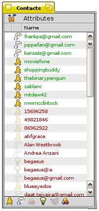
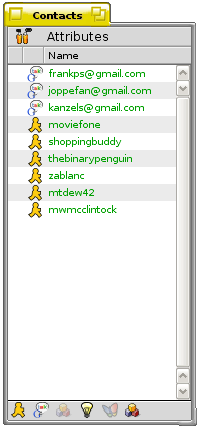
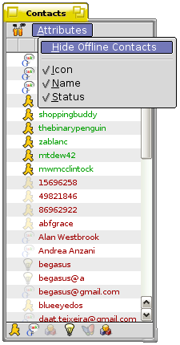

The Instant Messenger
Utilities
Keeping Logs Over Your Conversations
The Instant Messenger kit
im_contactlist
The cola-coder has made an quite so useful replacement for live queries over online contact, the im_contactlist. im_contactlist is a specialized attribute reader, only reading the specific im attributes: Icon, name and status. Your contacts can be sorted after these three attributes.

The tool shows the status of all your contacts. All online contacts are listed in green with an icon highlighted indicating the protocol your buddy is using. Offline buddies are by also default listed, in red and with the protocol icons faded. Offline contacts can be hidden. You can also enable Show Groups, this will sort your contacts in the same groups you have added to the People files.

In the bottom of the window, all five supported protocols are listed. The protocols that you are available for chats with are highlighted.
Double-clicking a listed online buddy will activate your default chat client, so that you can start chatting with your contact, and if you right-click on a contact a context menu will appear.